Image Basics
Last updated on 2026-07-06 | Edit this page
Estimated time: 25 minutes
Overview
Questions
- How are images represented in digital format?
Objectives
- Define the terms bit, byte, kilobyte, megabyte, etc.
- Explain how a digital image is composed of pixels.
- Explain how images are stored in text arrays.
- Explain the left-hand coordinate system used in digital images.
- Explain the RGB additive colour model used in digital images.
- Explain the basic image types
- Explain the characteristics of the BMP, JPEG, and TIFF image formats.
- Explain the difference between lossy and lossless compression.
- Explain the advantages and disadvantages of compressed image formats.
- Explain what information could be contained in image metadata.
The images we see every day, view with our electronic devices, or process with our programs are represented and stored in the computer as numeric abstractions, approximations of what we see with our eyes in the real world. Before we begin to learn how to process images with programs, we need to spend some time understanding how these abstractions work.
Pixels
It is important to realise that images are stored as rectangular arrays of hundreds, thousands, or millions of discrete “picture elements,” otherwise known as pixels. Each scene that a camera sees exists as a continuum of brightness and colours. As soon as we capture an image, we must represent the colours and brightness as discrete values and we must sample these values at discrete intervals. Each of these samples is a pixel. Each pixel can be thought of as a single square of light - but do not get comfortable with this notion. These are actually point samples, not little squares.
For example, consider this image of the KAUST beacon, with a square area designated by a red box:
Now, if we zoomed in close enough to see the pixels in the red box, we would see something like this:
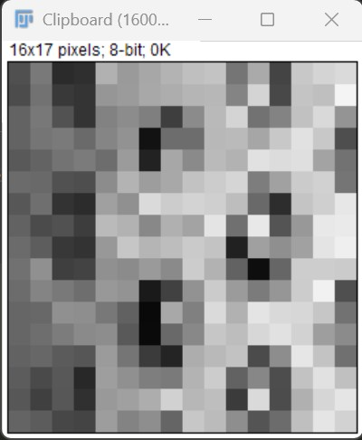
Note that each square in the enlarged image area - each pixel - is all one colour, but that each pixel can have a different colour from its neighbors. Viewed from a distance, these pixels seem to blend together to form the image we see.
In contrast to the image above, which has only brightness values,
from black to white, real-world images are typically made up of a vast
number of pixels, and each of these pixels is one of potentially
millions of colours.
While we will deal with pictures of such complexity in this lesson,
let’s start our exploration with just 15 pixels in a 5 x 3 matrix with 2
colours, and work our way up to that complexity.
Matrices, arrays, images and pixels
A matrix is a mathematical concept - numbers evenly arranged in a rectangle. This can be a two-dimensional rectangle, like the shape of the screen you’re looking at now. Or it could be a three-dimensional equivalent, a cuboid, or have even more dimensions, but it always keeps the evenly spaced arrangement of numbers. In computing, an array refers to a structure in the computer’s memory where data is stored in evenly spaced elements. This is strongly analogous to a matrix. For our purposes, the distinction between matrices and arrays is not important, we don’t really care how the computer arranges our data in its memory. The important thing is that the computer stores values describing the pixels in images, as arrays. And the terms matrix and array will be used interchangeably.
Loading images
Unlike image processing in Python and R, where we explicitly load
image data into numerical arrays for manipulation, the images we want to
analyze (process) with Fiji are loaded into floating windows displayed
on the desktop. The arrays that contain the image data are abstracted
away from us. There are multiple ways to load images in Fiji. You can
choose File -> Open and navigate to the file in the
filesystem. Or, you can navigate to the file in the filesystem,
right-click on it and choose Fiji to open the file. Note that
double-clicking on the image will likely open the image in the default
system application designated for opening image files and this probably
isn’t Fiji.
Whichever method you use to open a file will result in a window opening
with the image displayed with default display values. Let us load our
15-pixel image data from disk. File -> Open -> navigate
to the file eight.tif in the data folder saved on your system
and click the “Open” button.
Working with pixels
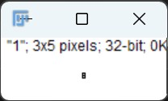
You might be thinking:
“If I squint, that does look vaguely like an eight, and I see two colours but how can I deal with a tiny image that is only 15 pixels in size?”.
We need to enlarge the image to see it. The display of the eight you
see when you open the file tries to recapitulate the original data as
closely as possible. But 15 pixels on the screen is not much real
estate. Click on the Magnifying glass on the Fiji Main Window. Then move
your cursor over the image window and onto the image itself.
Your cursor should change from an arrow to a double headed crossed arrow
when the cursor is over the image. Clicking in this position magnifies
the image 2X per click. Click again and again until the image is big
enough to see. The largest you can magnify the image is 3200%.
It should look Something like this:
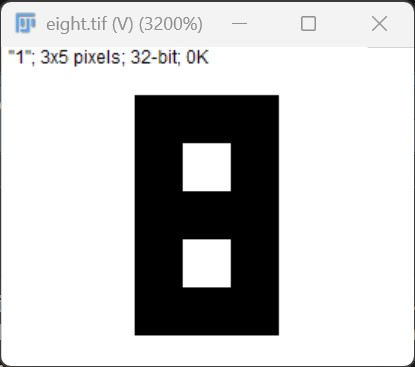
All those extra pixels are a consequence of our viewer creating additional pixels through interpolation. Originally, it displayed just a tiny image using only 15 screen pixels, but after magnification, each original pixel is represented by many pixels.
While many image file formats contain descriptive metadata that can be essential, the bulk of a picture file is just an array (or arrays) of numeric information that, when interpreted according to a certain rule set, become recognizable as an image to us. Our image of an eight is no exception, it’s a 5 x 3 matrix — 15 pixels. We can demonstrate that by saving the numeric information from each pixel as text. Make sure the image is the active window, then select File -> Save As -> Text Image… and save the file with a “.txt” extension — “eight.txt”. Open the file in a text editor or in a spreadsheet program. You should see the following matrix of values:
| 0.000 | 0.000 | 0.000 |
| 0.000 | 1.000 | 0.000 |
| 0.000 | 0.000 | 0.000 |
| 0.000 | 1.000 | 0.000 |
| 0.000 | 0.000 | 0.000 |
If we manipulate these arrays of numbers, we can manipulate the image.
To make it look like a zero, we need to change the number underlying the centremost pixel to be 1. With your text editor still open, change the middle column, middle row’s value from 0.000 to 1.000, like this:
| 0.000 | 0.000 | 0.000 |
| 0.000 | 1.000 | 0.000 |
| 0.000 | 1.000 | 0.000 |
| 0.000 | 1.000 | 0.000 |
| 0.000 | 0.000 | 0.000 |
save this as a file with a new name, something like “zero.txt”. Then, back in Fiji, Choose File -> Import -> Text Image… and navigate to the new file you just created. This will open your image – again it will be small. Use the same “magnify” strategy you used previously to increase the size of the image in the image window. It should look something like this:
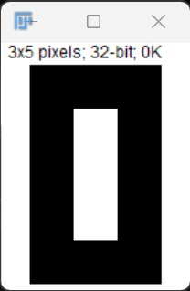
Coordinate system
When we process images, we can access, examine, and / or change the colour of any pixel we wish. To do this, we need some convention on how to access pixels individually; a way to give each one a name, or an address of a sort.
The most common manner to do this, and the one we will use in our programs, is to assign a modified Cartesian coordinate system to the image. The coordinate system we usually see in mathematics has a horizontal x-axis and a vertical y-axis, like this:

The modified coordinate system used for our images will have only positive coordinates, the origin will be in the upper left corner instead of the centre, and y coordinate values will get larger as they go down instead of up, like this:

This is called a left-hand coordinate system. If you hold your left hand in front of your face and point your thumb at the floor, your extended index finger will correspond to the x-axis while your thumb represents the y-axis.
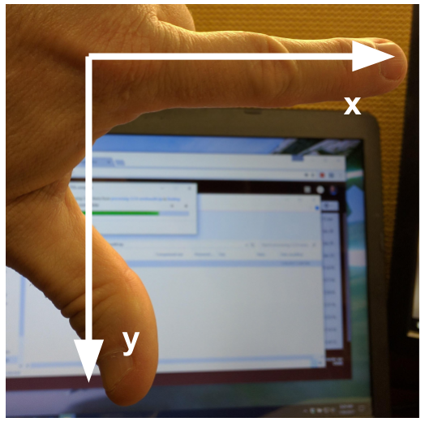
Until you have worked with images for a while, the most common mistake that you will make with coordinates is to forget that y coordinates get larger as they go down instead of up as in a normal Cartesian coordinate system. Consequently, it may be helpful to think in terms of counting down rows (r) for the y-axis and across columns (c) for the x-axis.
Changing Pixel Values (5 min)
Create an image that looks like a 5, starting with the image 8 that we’ve been working with by manipulating the underlying numerical matrix. Change the value of pixels so you have what looks like a 5 instead of an 8. Open this new array in Fiji to display the image.
There are many possible solutions, but one method would be . . .
Open the text file we created earlier, eight.txt in a text editor and change the values in the matrix to resemble this:
| 0.000 | 0.000 | 0.000 |
| 0.000 | 1.000 | 1.000 |
| 0.000 | 0.000 | 0.000 |
| 1.000 | 1.000 | 0.000 |
| 0.000 | 0.000 | 0.000 |
save the file with a new name, “five.txt”.
In Fiji, Choose File -> Import -> Text Image… and navigate to five.txt. This will open your image Use the same “magnify” strategy you used previously to increase the size of the image in the image window. It should look like this:
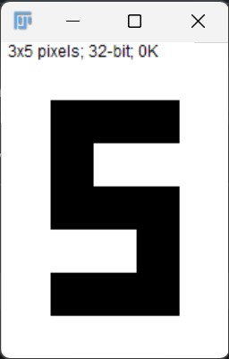
More colours
Up to now, we’ve only had a 2 colour matrix where each pixel has a value of “0” or “1”, but we can have more values if we use other numbers or fractions. One common way is to use the numbers between 0 and 255 to allow for 256 different colours or 256 different levels of grey. Let’s try that out.
- Open eight.tif again in a new window in Fiji.
- Multiply the whole matrix by 128
- Process -> Math -> Multiply…
- Type “128” into the Value: field
- Press “OK”
- Set the three pixels in the middle row to the value of 255.
- Save the new matrix as a text image, naming it “three_colours.txt”
- File -> Save As -> Text Image…
- Open the file with a text editor
- Change all three values in the middle row to “255.0”
- Save the changes.
- Save the new matrix as a text image, naming it “three_colours.txt”
- Open “three_colours.txt” in Fiji
- File -> Import -> Text Image…
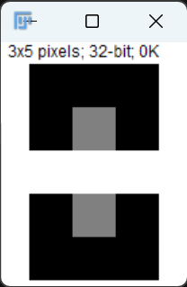
and here is the underlying matrix:
| 0.000 | 0.000 | 0.000 |
| 0.000 | 128.000 | 1.000 |
| 255.000 | 255.000 | 255.000 |
| 1.000 | 128.000 | 0.000 |
| 0.000 | 0.000 | 0.000 |
We now have 3 values displayed as 3 colours, but are they the three colours you expected? They all appear to be on a continuum of black to white. This is a consequence of the default lookup table (often abbreviated as LUT, alternatively known as a colour map) used in Fiji. You can think of a lookup table as a way that the computer chooses to display the image data (numbers in the image array) on the screen. However, the goal here is not to have one number for every possible colour, but rather to have a continuum of colours that demonstrate relative intensity. In our specific case here for example, 255 or the highest intensity is mapped to white, 128 is mapped to gray, and 0 or the lowest intensity is mapped to a black. The best LUT for your data will vary dpeending on your purpose. Fiji has many built-in options. Let’s see how you can change the LUT.
Image -> Lookup Tables -> Green
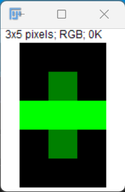
Above we have exactly the same underlying data matrix, but now the colours are shades of green. Zero maps to black, 255 maps to pure green, and 128 maps to medium green. Here we only have a single matrix in the data and we utilize a single color map to represent the luminance, or intensity of the data and correspondingly this matrix (knwn as a channel) is referred to as the luminance channel. We can have an arbitrary number of matrices in the data. Each matrix can be a separate intensity channel (e.g. in a multi-channel fluorescence experiment) or they can be combined to generate colour – below.
Even more colours
This is all well and good at this scale, but what happens when we have a picture of a natural landscape that contains millions of colours. Mapping each colour to one number like this would be inefficient.
Rather than larger numbers, the solution is to combine numbers in more dimensions. Storing the numbers in a multi-dimensional matrix where each colour or property like transparency is associated with its own dimension allows for individual contributions to a pixel to be adjusted independently. This ability to manipulate properties of groups of pixels separately will be key to certain techniques explored in later chapters of this lesson. To get started let’s see an example of how different dimensions of information combine to produce a set of pixels using a 4 x 4 matrix with 3 dimensions. We’ll use one dimension each for the colours red, green, and blue. Open the “4x4checkerboard.tif” image in Fiji (File -> Open… – and then navigate to the file)
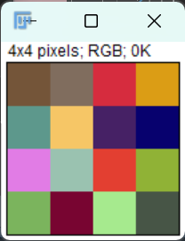
Previously we had one number being mapped to one colour or intensity. Now we are combining the effect of 3 numbers to arrive at a single colour value. Let’s see an example of that using the blue square at the end of the second row. An easy way to find the values of pixels in an image that is open in Fiji, is to mouse over the pixel you are interested in, while looking in the status bar of the main window.
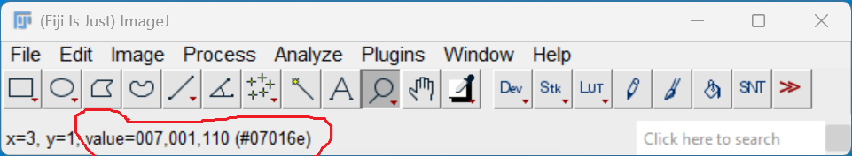
The integers 007,001,110 in order represent Red, Green, and Blue. In
the case of the blue pixel, the red value is 007, the green value is 001
and the blue value is 110. Examining the 3 values can help us understand
how these values combine to blue. You can think of each colour as a
channel that can take values from 0 to 255. If we divide each value by
256 (the total number of possible values per each channel), we can
determine the proportion of each of the colours contribution to the
total colour. Effectively, the red is at 7/256 or 2.7 percent of its
potential, the green is at 1/256 or 0.4 percent, and blue is 110/256 or
43.0 percent of its potential. So when you mix those three intensities
of colour, blue is winning by a wide margin, but the red and green still
contribute to make it a slightly different shade of blue than 0,0,110
would be on its own.
Remember that each of these colour values mapped to dimensions of the
matrix may be referred to as channels. It may be helpful to display each
of these channels independently, to help us understand what is
happening. We can do that by using Fiji’s split channels function.
Ensure that the “4x4checkerboard.tif” is the selected window, then from
the menu, choose:
Image -> Color -> Split Channels
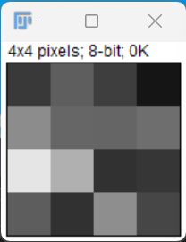
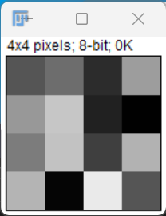
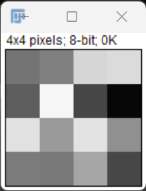
Splitting the channels results in 3 individual windows each with a single image matrix being displayed. Again, Fiji’s default LUT has coloured the resulting image windows in grayscale. Below I’ve changed the LUT for each of hte channels to its respective colour.
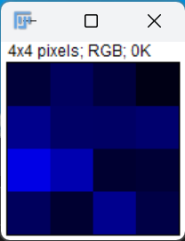
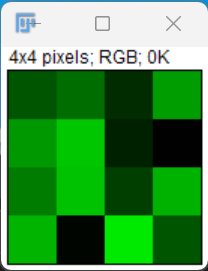
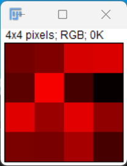
If we look at the pixel that we’ve been considering, we can see each of those colour contributions in action. The three values are 7 (R), 1(G), 110(B). Notice that there are several squares in the blue channel figure that look even more intensely blue than our blue pixel. When all three channels are combined, however, the blue light of those squares is being diluted/combined by the relative strength of red and green being mixed in with them.
24-bit RGB colour
This colour model, known as the RGB (Red, Green, Blue) model is the most common.
As we saw, the RGB model is an additive colour model, which means that the primary colours are mixed together to form other colours.
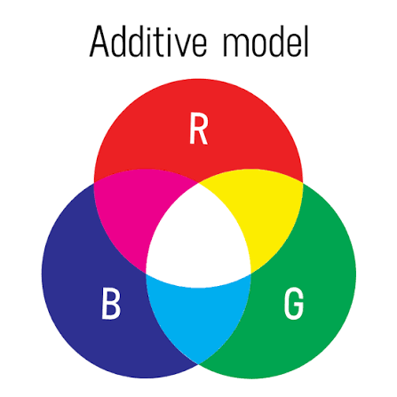
Most frequently, the amount of the primary colour added is represented as an integer in the closed range [0, 255] as seen in the example. Therefore, there are 256 discrete amounts of each primary colour that can be added to produce another colour. The number of discrete amounts of each colour, 256, corresponds to the amount of memory allocated (in bits) by the computer to store the colour information. In this case there are 8 bits allocated channel and because we can store either a 0 or a 1 in each of the 8 bits, the total number of possible storage values is the combinatorial of 2 and 8 (28=256). Because we have three channels each with 8 bits (8+8+8=24), we call this 24-bit colour depth.
Any particular colour in the RGB model can be expressed by a triplet of integers in [0, 255], representing the red, green, and blue channels, respectively. A larger number in a channel means that more of that primary colour is present.
24-bit RGB is not the only colour model. But we will limit our discussion here to only 24-bit colour. There are many web-based colour calculators you can use to determine or specify RGB colors. These calculators often allow you to convert from one colour model to another.
Thinking about RGB colours (5 min)
Suppose that we represent colours as triples (r, g, b), where each of r, g, and b is an integer in [0, 255]. What colours are represented by each of these triples? (Try to answer these questions without reading further.)
- (255, 0, 0)
- (0, 255, 0)
- (0, 0, 255)
- (255, 255, 255)
- (0, 0, 0)
- (128, 128, 128)
- (255, 0, 0) represents red, because the red channel is maximised, while the other two channels have the minimum values.
- (0, 255, 0) represents green.
- (0, 0, 255) represents blue.
- (255, 255, 255) is a little harder. When we mix the maximum value of all three colour channels, we see the colour white.
- (0, 0, 0) represents the absence of all colour, or black.
- (128, 128, 128) represents a medium shade of gray. Note that the 24-bit RGB colour model provides at least 254 shades of gray, rather than only fifty.
Note that the RGB colour model may run contrary to your experience, especially if you have mixed primary colours of paint to create new colours. In the RGB model, the lack of any colour is black, while the maximum amount of each of the primary colours is white. With physical paint, we might start with a white base, and then add differing amounts of other paints to produce a darker shade.
After completing the previous challenge, we can look at some further examples of 24-bit RGB colours, in a visual way. The image in the next challenge shows some colour names, their 24-bit RGB triplet values, and the colour itself.
RGB colour table (optional, not included in timing)
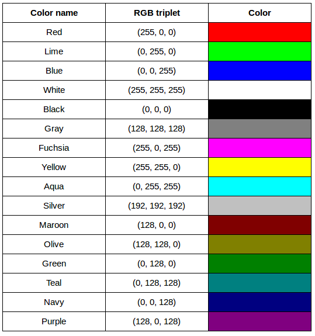
We cannot really provide a complete table. To see why, answer this question: How many possible colours can be represented with the 24-bit RGB model?
There are 24 total bits in an RGB colour of this type, and each bit can be on or off (0 or 1), therefore, there are 224 = 16,777,216 possible colours with our additive, 24-bit RGB colour model.
Although 24-bit colour is common, as stated previously, there are other options. For example, we might have 8-bit colour (3 bits for red and green, but only 2 for blue, providing 8 × 8 × 4 = 256 colours) or 16-bit colour (4 bits for red, green, and blue, plus 4 more for transparency, providing 16 × 16 × 16 = 4096 colours, with 16 transparency levels each). There are colour depths with more than eight bits per channel, but as the human eye can only discern approximately 10 million different colours, these are not often used.
If you are using an older or inexpensive laptop screen or LCD monitor to view images, it may only support 18-bit colour, capable of displaying 64 × 64 × 64 = 262,144 colours. 24-bit colour images will be converted in some manner to 18-bit, and thus the colour quality you see will not match what is actually in the image.
We can combine our coordinate system with the 24-bit RGB colour model to gain a conceptual understanding of the images we will be working with. An image is a rectangular array of pixels, each with its own coordinate. Each pixel in the image is a square point of coloured light, where the colour is specified by a 24-bit RGB triplet. Such an image is an example of raster graphics.
Image type
Fiji categorizes images by their pixel data bit-depth (i.e. how much memory is allocated to store a single pixel’s data - see below – Bits & Bytes) to support scientific analysis. The core types represent how much data is stored per pixel, determining the image’s intensity range and color capabilities. You can check or change your image type in Fiji via the top menu by selecting:
Image > Type
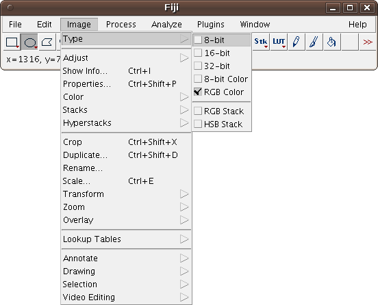
The primary image types used in Fiji are:
- 8-bit: Each pixel holds one of 256 possible intensity values (0 to 255). This is the standard type for most basic image processing.
- 16-bit: Stores 65,536 intensity values per pixel (0 to 65,535). This is standard for raw scientific data and microscopy to capture finer differences between intensities.
- 32-bit (Float): Stores pixel values as floating-point numbers rather than whole integers. This accommodates extreme dynamic ranges or calculated measurements.
- 8-bit Color / 256-color: An 8-bit image that uses a look-up table (LUT) to translate pixel values into colors. (These are mostly obsolete for processing and are usually converted to standard 8-bit or RGB).
- RGB Color: True-color images that use three 8-bit channels (Red, Green, Blue) to create over 16 million possible colors.
There are two more options: RGB stack and HSV stack, which can turn a 2-dimensional color image into a stack consisting of 3 color channels (red, green & blue or hue, saturation & value, respectively).
To confirm the specifics of your image data (including dimensions and voxel size), you can view all metadata by selecting:
Image > Show Info…
Universal Image formats
Although the images we will manipulate in our programs are conceptualised as rectangular arrays of RGB triplets, they are not necessarily created, stored, or transmitted in that format. There are several image formats we might encounter, and we should know the basics of at least of few of them. Some formats we might encounter, and their file extensions, are shown in this table:
| Format | Extension |
|---|---|
| Device-Independent Bitmap (BMP) | .bmp |
| Joint Photographic Experts Group (JPEG) | .jpg or .jpeg |
| Tagged Image File Format (TIFF) | .tif or .tiff |
| Portable Network Graphics | .png |
BMP
The file format that comes closest to our preceding conceptualisation of images is the Device-Independent Bitmap, or BMP, file format. BMP files store raster graphics images as long sequences of binary-encoded numbers that specify the colour of each pixel in the image. Since computer files are one-dimensional structures, the pixel colours are stored one row at a time. That is, the first row of pixels (those with y-coordinate 0) are stored first, followed by the second row (those with y-coordinate 1), and so on. Depending on how it was created, a BMP image might have 8-bit, 16-bit, or 24-bit colour depth.
24-bit BMP images have a relatively simple file format, can be viewed and loaded across a wide variety of operating systems, and have high quality. However, BMP images are not compressed, resulting in very large file sizes for any useful image resolutions.
The idea of image compression is important to us for two reasons: first, compressed images have smaller file sizes, and are therefore easier to store and transmit; and second, compressed images may not have as much detail as their uncompressed counterparts, and so our programs may not be able to detect some important aspect if we are working with compressed images. Since compression is important to us, we should take a brief detour and discuss the concept.
Image compression
Before discussing additional formats, familiarity with image compression will be helpful. Let’s delve into that subject with a challenge. For this challenge, you will need to know about bits / bytes and how those are used to express computer storage capacities. If you already know, you can skip to the challenge below.
Bits and bytes
Before we talk specifically about images, we first need to understand how numbers are stored in a modern digital computer. When we think of a number, we do so using a decimal, or base-10 place-value number system. For example, a number like 659 is 6 × 102 + 5 × 101 + 9 × 100. Each digit in the number is multiplied by a power of 10, based on where it occurs, and there are 10 digits that can occur in each position (0, 1, 2, 3, 4, 5, 6, 7, 8, 9).
In principle, computers could be constructed to represent numbers in exactly the same way. But, the electronic circuits inside a computer are much easier to construct if we restrict the numeric base to only two, instead of 10. (It is easier for circuitry to tell the difference between two voltage levels than it is to differentiate among 10 levels.) So, values in a computer are stored using a binary, or base-2 place-value number system.
In this system, each symbol in a number is called a bit instead of a digit, and there are only two values for each bit (0 and 1). We might imagine a four-bit binary number, 1101. Using the same kind of place-value expansion as we did above for 659, we see that 1101 = 1 × 23 + 1 × 22 + 0 × 21 + 1 × 20, which if we do the math is 8 + 4 + 0 + 1, or 13 in decimal.
Internally, computers have a minimum number of bits that they work with at a given time: eight. A group of eight bits is called a byte. The amount of memory (RAM) and drive space our computers have is quantified by terms like Megabytes (MB), Gigabytes (GB), and Terabytes (TB). The following table provides more formal definitions for these terms.
| Unit | Abbreviation | Size |
|---|---|---|
| Kilobyte | KB | 1024 bytes |
| Megabyte | MB | 1024 KB |
| Gigabyte | GB | 1024 MB |
| Terabyte | TB | 1024 GB |
NB:
KB (Kilobyte): Used for file sizes and storage capacity. In this abbreviation, the uppercase “B” strictly means byte.
Kb (Kilobit): Used by Internet Service Providers (ISPs) and network hardware to describe broadband or network speeds (e.g., Kbps, meaning Kilobits per second). In this abbreviation, the lowercase “b” means bit.
While KB almost always refers to bytes, the exact math can sometimes differ. In binary measurements—like those used in Windows operating systems or memory chips, 1 KB equals 1,024 bytes. Standard metric measurements, however, consider 1 KB to equal 1,000 bytes.*
BMP image size (optional, not included in timing)
Imagine that we have a fairly large, but very boring image: a 5,000 × 5,000 pixel image composed of nothing but white pixels. If we used an uncompressed image format such as BMP, with the 24-bit RGB colour model, how much storage would be required for the file?
In such an image, there are 5,000 × 5,000 = 25,000,000 pixels, and 24 bits for each pixel, leading to 25,000,000 × 24 = 600,000,000 bits, or 75,000,000 bytes (71.5MB). That is quite a lot of space for a very uninteresting image!
Because image files can be very large, various compression schemes exist for saving (approximately) the same information while using less space. These compression techniques can be categorised as lossless or lossy.
Lossless compression
In lossless image compression, we apply some algorithm (i.e., a computerised procedure) to the image, resulting in a file that is significantly smaller than the uncompressed BMP file equivalent would be. Then, when we wish to load and view or process the image, our program reads the compressed file, and reverses the compression process, resulting in an image that is identical to the original. Nothing is lost in the process – hence the term “lossless.”
The general idea of lossless compression is to somehow detect long patterns of bytes in a file that are repeated over and over, and then assign a smaller bit pattern to represent the longer sample. Then, the compressed file is made up of the smaller patterns, rather than the larger ones, thus reducing the number of bytes required to save the file. The compressed file also contains a table of the substituted patterns and the originals, so when the file is decompressed it can be made identical to the original before compression.
To provide you with a concrete example, consider the 71.5 MB white BMP image discussed above. When put through the zip compression utility on Microsoft Windows, the resulting .zip file is only 72 KB in size! That is, the .zip version of the image is three orders of magnitude smaller than the original, and it can be decompressed into a file that is byte-for-byte the same as the original. Since the original is so repetitious - simply the same colour triplet repeated 25,000,000 times - the compression algorithm can dramatically reduce the size of the file.
If you work with .zip or .gz archives, you are dealing with lossless compression.
Lossy compression
Lossy compression takes the original image and discards some of the detail in it, resulting in a smaller file format. The goal is to only throw away detail that someone viewing the image would not notice. Many lossy compression schemes have adjustable levels of compression, so that the image creator can choose the amount of detail that is lost. The more detail that is sacrificed, the smaller the image files will be - but of course, the detail and richness of the image will be lower as well.
This is probably fine for images that are shown on Web pages or printed off on 4 × 6 photo paper, but may or may not be fine for scientific work. You will have to decide whether the loss of image quality and detail are important to your work, versus the space savings afforded by a lossy compression format.
It is important to understand that once an image is saved in a lossy compression format, the lost detail is just that - lost. I.e., unlike lossless formats, given an image saved in a lossy format, there is no way to reconstruct the original image in a byte-by-byte manner.
JPEG
JPEG images are perhaps the most commonly encountered digital images today. JPEG uses lossy compression, and the degree of compression can be tuned to your liking. It supports 24-bit colour depth, and since the format is so widely used, JPEG images can be viewed and manipulated easily on all computing platforms.
Examining actual image sizes (optional, not included in timing)
Let us see the effects of image compression on image size with actual images. The following procedure creates a square white image 5000 x 5000 pixels, then saves it as a BMP and as a JPEG image for size comparison.
- File -> New -> Image…
- The “New Image Creation Pane” opens up:
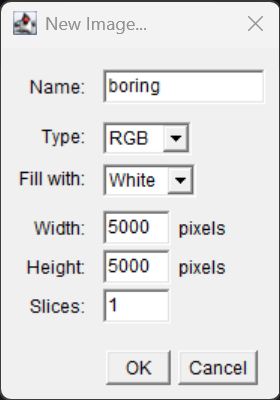
- Fill this in as in the image above, 5000 X 5000 pixels, RGB type, fill with white and choose a name you can remember. Does it matter which colour we choose to fill the image with for this purpose? Click “OK”
- An image window opens with the name you typed in the new image pane.
- Save the image as a bmp file:
- File -> Save As -> BMP…
- Save the file somewhere easy to loccate as
boring.bmp
- Save the image as a JPEG file:
- File -> Save As -> Jpeg…
- Save the file somewhere easy to locate as
boring.jpg
Examine the file sizes of the two output files,
boring.bmp and boring.jpg. Does the BMP image
size match our previous prediction? How about the JPEG?
The BMP file, ws.bmp, is 73,243 KB, which matches our
prediction very nicely. The JPEG file, ws.jpg, is 384 KB,
two orders of magnitude smaller than the bitmap version.
Comparing lossless versus lossy compression (optional, not included in timing)
Let us see a hands-on example of lossless versus lossy compression.
Open a terminal (or Windows PowerShell) and navigate to the
data/ directory. The two output images, ws.bmp
and ws.jpg, should still be in the directory, along with
another image, tree.jpg.
We can apply lossless compression to any file by using the
zip command. Recall that the ws.bmp file
contains 75,000,054 bytes. Apply lossless compression to this image by
executing the following command: zip ws.zip ws.bmp
(Compress-Archive ws.bmp ws.zip with PowerShell). This
command tells the computer to create a new compressed file,
ws.zip, from the original bitmap image. Execute a similar
command on the tree JPEG file: zip tree.zip tree.jpg
(Compress-Archive tree.jpg tree.zip with PowerShell).
Having created the compressed file, use the ls -l
command (dir with PowerShell) to display the contents of
the directory. How big are the compressed files? How do those compare to
the size of ws.bmp and tree.jpg? What can you
conclude from the relative sizes?
Here is a partial directory listing, showing the sizes of the relevant files there:
OUTPUT
-rw-rw-r-- 1 diva diva 154344 Jun 18 08:32 tree.jpg
-rw-rw-r-- 1 diva diva 146049 Jun 18 08:53 tree.zip
-rw-rw-r-- 1 diva diva 75000054 Jun 18 08:51 ws.bmp
-rw-rw-r-- 1 diva diva 72986 Jun 18 08:53 ws.zipWe can see that the regularity of the bitmap image (remember, it is a
5,000 x 5,000 pixel image containing only white pixels) allows the
lossless compression scheme to compress the file quite effectively. On
the other hand, compressing tree.jpg does not create a much
smaller file; this is because the JPEG image was already in a compressed
format.
Here is an example showing how JPEG compression might impact image quality. Consider this image of several maize seedlings (scaled down here from 11,339 × 11,336 pixels in order to fit the display).
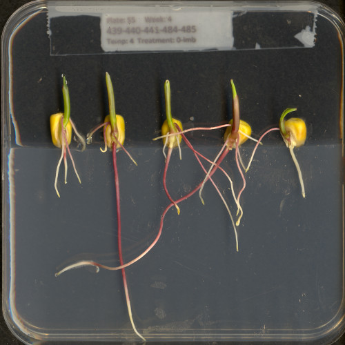
Now, let us zoom in and look at a small section of the label in the original, first in the uncompressed format:
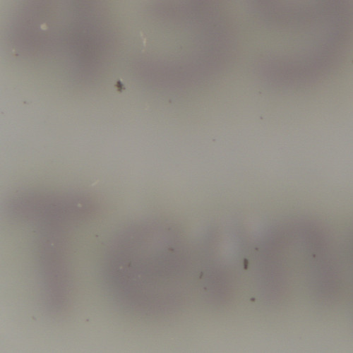
Here is the same area of the image, but in JPEG format. We used a fairly aggressive compression parameter to make the JPEG, in order to illustrate the problems you might encounter with the format.
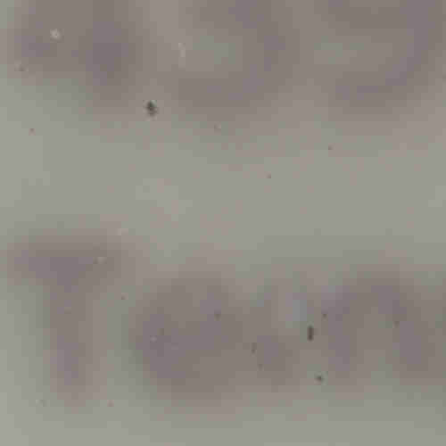
The JPEG image is of clearly inferior quality. It has less colour variation and noticeable pixelation. Quality differences become even more marked when one examines the histograms for each image. A histogram shows how often each colour value appears in an image. The histograms for the uncompressed (left) and compressed (right) images are shown below:
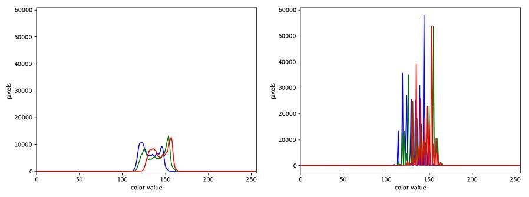
We learn how to make histograms such as these later on in the workshop. The differences in the colour histograms are even more apparent than in the images themselves; clearly the colours in the JPEG image are different from the uncompressed version.
If the quality settings for your JPEG images are high (and the compression rate therefore relatively low), the images may be of sufficient quality for your work. It all depends on how much quality you need, and what restrictions you have on image storage space. Another consideration may be where the images are stored. For example, if your images are stored in the cloud and therefore must be downloaded to your system before you use them, you may wish to use a compressed image format to speed up file transfer time.
PNG
PNG images are well suited for storing diagrams. It uses a lossless compression and is hence often used in web applications for non-photographic images. The format is able to store RGB and plain luminance (single channel, without an associated color) data, among others. Image data is stored row-wise and then, per row, a simple filter, like taking the difference of adjacent pixels, can be applied to increase the compressability of the data. The filtered data is then compressed in the next step and written out to the disk.
TIFF
TIFF images are popular with publishers, graphics designers, and photographers. TIFF images can be uncompressed, or compressed using either lossless or lossy compression schemes, depending on the settings used, and so TIFF images seem to have the benefits of both the BMP and JPEG formats. The main disadvantage of TIFF images (other than the size of images in the uncompressed version of the format) is that they are not universally readable by image viewing and manipulation software.
Metadata
JPEG and TIFF images support the inclusion of metadata in
images. Metadata is textual information that is contained within an
image file. Metadata holds information about the image itself, such as
when the image was captured, where it was captured, what type of camera
was used and with what settings, etc. We normally don’t see this
metadata when we view an image, but we can view it independently if we
wish to (see Accessing
Metadata, below). The important thing to be aware of at this
stage is that you cannot rely on the metadata of an image being fully
preserved when you use software to process that image. The image
reader/writer library that we use throughout this lesson,
imageio.v3, includes metadata when saving new images but
may fail to keep certain metadata fields. In any case, remember:
if metadata is important to you, take precautions to always
preserve the original files.
Accessing Metadata
imageio.v3 provides a way to display or explore the
metadata associated with an image. Metadata is served independently from
pixel data:
Many popular image editing programs have built-in metadata viewing capabilities. A platform-independent open-source tool that allows users to read, write, and edit metadata is ExifTool. It can handle a wide range of file types and metadata formats but requires some technical knowledge to be used effectively. Other software exists that can help you handle metadata, e.g., Fiji and ImageMagick. You may want to explore these options if you need to work with the metadata of your images.
Microscope Specific Image formats & the BioFormats Library
Microscope software saves image data in proprietary formats unique to each hardware vendor. The Bio-Formats Plugin for Fiji bridges this gap, enabling you to open over 140 of these vendor-specific file types while preserving critical spatial calibrations and hardware metadata.
Every major microscope manufacturer encodes proprietary information (like laser power, z-stacks, and time-series settings) differently, which makes them unreadable by standard image viewers:
- Zeiss (.czi): A complex, multi-dimensional format that frequently uses pyramidal imaging for large virtual slides.
- Leica (.lif): Functions like a database, meaning a single file can contain multiple distinct datasets or image series.
- Nikon (.nd / .nd2): Stores multi-dimensional image series, but large sequences may require being opened as an image sequence.
- Olympus (.oif / .oib): Complex folder/file structures that store channel configurations.
- OME-TIFF (.ome.tiff): The community standard developed by the Open Microscopy Environment that combines raw pixels with open XML-based metadata.
Fiji natively bundles Bio-Formats, making it easy to open proprietary files by overriding Fiji’s standard file opening logic.
- The Quick Method (Drag and Drop) Simply drag your proprietary file (e.g., a .czi or .lif) and drop it onto the main Fiji toolbar. Fiji will recognize the file and launch the Bio-Formats Import Options dialogue.
- The Controlled Method (Plugins -> Bio-Formats) For complex multi-series files (like .lif databases), it is recommended to use the plugin directly so you can choose which specific series to open:
- Select Plugins > Bio-Formats > Bio-Formats Importer (or File > Import > Bio-Formats).
- Select your proprietary file in the system.
- In the Bio-Formats Import Options pop-up, choose the View Type (e.g., standard image, stack, or Hyperstack).
- Check the metadata boxes to keep scaling and channel information
- click OK.
NGFF (Next Generation File Format)
In microscopy, the Next-Generation File Format (NGFF) – spearheaded by the Open Microscopy Environment (OME) – describes the community-driven transition toward OME-Zarr. NGFF enables researchers to stream, share, and analyze large-scale multi-dimensional microscopy data directly from cloud storage without needing to download entire terabyte-sized datasets.
Summary of standard image formats used in this lesson
The following table summarises the characteristics of the BMP, JPEG, and TIFF image formats:
| Format | Compression | Metadata | Advantages | Disadvantages |
|---|---|---|---|---|
| BMP | None | None | Universally viewable, high quality | Large file sizes |
| JPEG | Lossy | Yes | Universally viewable, smaller file size | Detail may be lost |
| PNG | Lossless | Yes | Universally viewable, open standard, smaller file size | Metadata less flexible than TIFF, RGB only |
| TIFF | None, lossy, or lossless | Yes | High quality or smaller file size | Not universally viewable |
- Digital images are represented as rectangular arrays of square pixels.
- Digital images use a left-hand coordinate system, with the origin in the upper left corner, the x-axis running to the right, and the y-axis running down. Some learners may prefer to think in terms of counting down rows for the y-axis and across columns for the x-axis. Thus, we will make an effort to allow for both approaches in our lesson presentation.
- Most frequently, digital images use an additive RGB model, with eight bits for the red, green, and blue channels.
- scikit-image images are stored as multi-dimensional NumPy arrays.
- In scikit-image images, the red channel is specified first, then the green, then the blue, i.e., RGB.
- Lossless compression retains all the details in an image, but lossy compression results in loss of some of the original image detail.
- BMP images are uncompressed, meaning they have high quality but also that their file sizes are large.
- JPEG images use lossy compression, meaning that their file sizes are smaller, but image quality may suffer.
- TIFF images can be uncompressed or compressed with lossy or lossless compression.
- Depending on the camera or sensor, various useful pieces of information may be stored in an image file, in the image metadata.